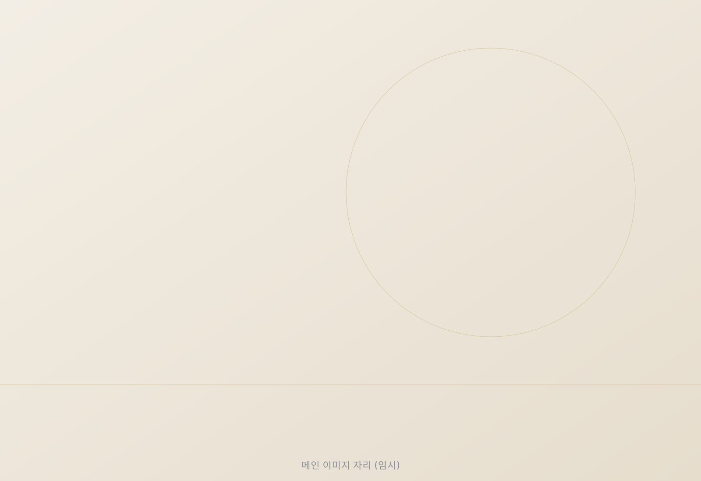
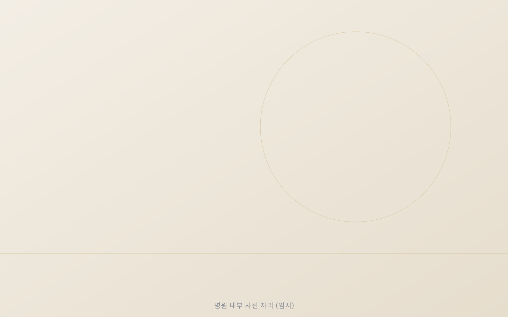
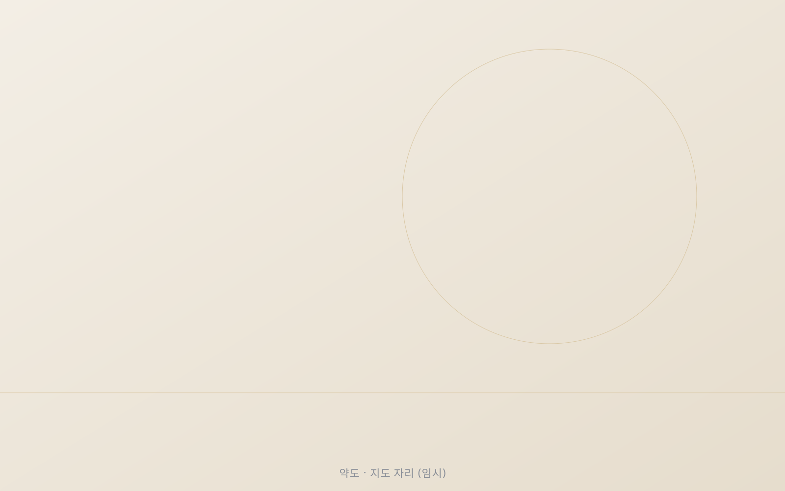

First & Best Clinic
처음 마음 그대로, 끝까지 최선을
Philosophy
First & Best,
이름에 담은 약속
First
처음의 마음으로
처음 상담에서 나눈 고민과 이야기를 끝까지 기억합니다. 첫 만남의 정성이 마지막 관리까지 이어지도록, 한 분 한 분을 처음처럼 대하겠습니다.
Best
함께 만드는 최선
의료진은 진료의 모든 과정에 최선을 다하고, 환자분은 그 과정에서 편안하고 충분한 설명을 받는 최선의 경험을 하실 수 있도록 하겠습니다.

Doctor
원장 소개
Treatments
시술 안내
피부 상태와 생활 방식은 사람마다 다릅니다. 충분한 상담을 통해 꼭 필요한 시술만 함께 정하겠습니다.
모든 시술은 개인에 따라 결과와 회복 기간이 다를 수 있으며, 붉어짐·부기·멍·색소 변화 등 부작용이 나타날 수 있습니다. 시술 여부는 반드시 의료진과 상담 후 결정하시기 바랍니다.
Non-covered Fees
비급여 진료비 안내
의료법에 따라 비급여 진료 항목과 비용을 안내해 드립니다.
※ 표시된 금액은 [부가세 포함 여부 확정 예정]이며, 자세한 사항은 내원 시 상담을 통해 안내해 드립니다.
※ 최종 업데이트: [날짜 확정 예정]
Hours & Location
진료 시간 · 오시는 길
진료 시간
전화 문의
주소

Journal
퍼스트앤베스트 이야기
피부 관리 정보와 병원 소식을 블로그에서 전해 드립니다.